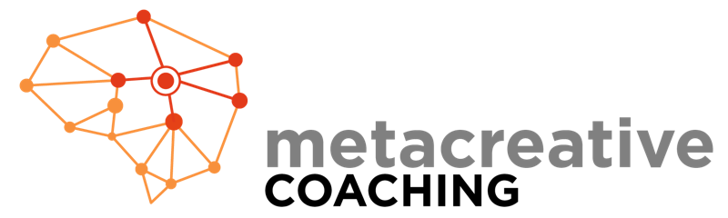

Metacreatividad
Una metodología de entrenamiento de base sistémica destinada al desarrollo del potencial de personas, equipos y organizaciones. Interpretamos al observador que somos como una idea de ideas que siente y se corporeiza.
Una metodología de base sistémica para desarrollar el potencial de personas, equipos y organizaciones en un mundo que ya no vuelve a ser estable.
Estamos viviendo una crisis sin precedentes. El mundo VICA llegó para quedarse, y cada persona percibe el entorno de una forma particular y, a partir de eso, toma decisiones.
El coaching ontológico postula que, a partir de las interpretaciones que hacemos de lo que pasa, configuramos nuestra realidad.
Desde la Metacreatividad tomamos estos postulados y los combinamos con los cinco pilares que propone este movimiento: percibir, pensar, sentir, actuar y corporizar.
Percibimos lo que nos rodea a través de nuestros sentidos.
Interpretamos y emitimos juicios que nos llevan a posicionarnos de una forma determinada.
Esos pensamientos generan una forma de sentir, que nos predispone a un curso de acción.
A través de cómo accionamos construimos relaciones y resultados.
Hay situaciones que toman cuerpo en nuestro entorno y en nuestra vida.
¿Cuánto de nuestra identidad anclamos a eso que se “corporizaba” en nuestra vida y ya no está? ¿Cuánto de nuestra autoconfianza y de nuestro poder personal se fue con eso?
Los seres humanos tendemos a mirar esas “corporizaciones” como parte de lo que somos y, lógicamente, hacemos todo lo posible para preservarlas. Pero esto es solo una configuración de nuestro campo mental.
A veces, aunque nos genere sufrimiento, preferimos “sobreproteger” lo que creemos que somos antes que soltar, adaptarnos y crear lo nuevo para autorrealizarnos.
Es importante romper estos patrones limitantes.

Una metodología de entrenamiento de base sistémica destinada al desarrollo del potencial de personas, equipos y organizaciones. Interpretamos al observador que somos como una idea de ideas que siente y se corporeiza.
Un método de intervención totalmente innovador que permite maximizar el nivel de aprendizaje y de resultados. Combinando distintas disciplinas de transformación y tecnologías de la mente, entrenamos formas de ser que se traducen en resultados extraordinarios, a partir de la toma de consciencia, la reprogramación de hábitos y la práctica inmersiva.
En los encuentros vas a aprender los cinco pasos fundamentales del método.
Identificar el problema o la situación a generar.
Observar, conectar y habitar las diferentes entidades involucradas en la situación.
Identificar cuál es el “movimiento” que falta para que eso se destrabe y generar declaraciones que permitan la transformación.
Integrar los aprendizajes y las transformaciones generadas en el proceso.
Poner en práctica los aprendizajes en la vida cotidiana para generar transformación.
El Coaching Metacreativo integra conocimientos y habilidades de estas disciplinas. Esto marca la diferencia tanto como entrenamiento personal como en tu formación como profesional de nivel internacional.
Conocé la certificación en Coaching Ontológico Metacreativo avalada por ICF o llevá tu práctica al siguiente nivel con Coaching Total.